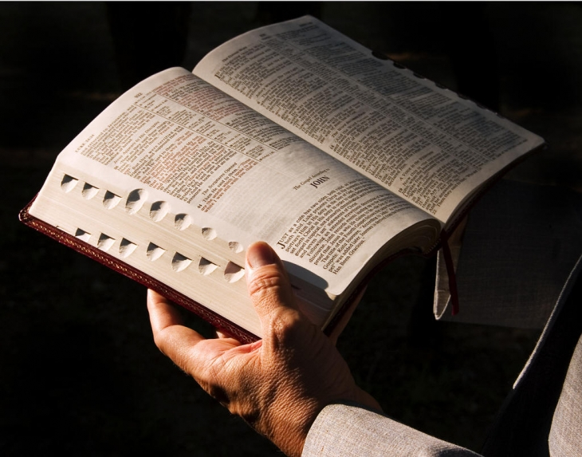

Поради для щоденного духовного читання
Читання Святого Письма – це не просто ознайомлення з текстом чи перегляд сторінок. Для християнина це можливість зустрітися з Богом через Його Слово, почути Його, краще пізнати Його волю та побачити, як Євангеліє може змінювати наше життя.

Ось кілька порад, які допоможуть зробити читання Біблії більш усвідомленим і плідним.
Добре мати конкретний час, коли ви можете спокійно побути зі Святим Письмом. Це може бути ранок, вечір або інший зручний момент. Навіть 10-15 хвилин щоденного уважного читання можуть принести більше користі, ніж тривале, але поверхневе читання. Важливо створити умови, у яких ніщо не відволікатиме вас від молитви та роздумів.
Перед тим як відкрити Святе Письмо, зверніться до Бога і попросіть Його дати вам мудрість, розуміння та відкрите серце. Молитва допомагає нам читати Біблію не просто як звичайну книгу, а як Слово, через яке Господь може промовляти до нас.
Не варто гнатися за кількістю прочитаних сторінок. Краще уважно прочитати один уривок і замислитися над ним, ніж прочитати багато, нічого не запам'ятавши. Під час читання можна поставити собі кілька запитань: Що цей текст говорить мені про Бога? Чого він навчає мене про людину? До чого Господь закликає мене? Як я можу застосувати це у своєму житті?
Не все у Святому Письмі можна одразу зрозуміти без додаткових пояснень. Для глибшого розуміння корисно звертатися до біблійних коментарів, словників та інших перевірених джерел. Історичний, культурний та релігійний контекст допомагає краще зрозуміти, чому Христос говорив ті чи інші притчі, що означали певні звичаї або чому окремі приписи Старого Завіту мали таке значення для людей того часу.
Можна вести невеликий духовний щоденник, у якому записувати важливі думки, запитання, уривки, які особливо торкнулися вашого серця. Через певний час ви зможете повернутися до своїх записів і побачити, які слова Святого Письма допомогли вам у конкретних життєвих ситуаціях.
Біблія не повинна бути для нас книгою, яку ми читаємо лише наодинці. Дуже корисно ділитися своїми думками з іншими християнами, брати участь у біблійних зустрічах чи спільнотах. Інша людина може звернути увагу на те, чого ми самі не помітили, і допомогти глибше зрозуміти прочитаний текст.
Святе Письмо приносить плід не тоді, коли ми просто знаємо багато біблійних цитат, а тоді, коли починаємо жити відповідно до Божого Слова. Якщо Євангеліє закликає нас прощати – потрібно вчитися прощати, якщо закликає допомагати ближньому – потрібно допомагати. Кожен добрий вчинок, молитва, прояв милосердя та любові стають практичним втіленням Божого Слова.
Не має значення, скільки вам років і чи читали ви Біблію раніше. Почати можна у будь-якому віці. Навіть якщо вам здається, що ви вже багато чого втратили, сьогодні завжди є можливість відкрити Святе Письмо і зробити перший крок.
У Святому Письмі є складні місця, які потребують пояснення. Якщо вам щось незрозуміло, не потрібно соромитися запитувати. Можна звернутися до настоятеля, священника, монаха чи монахині, які допоможуть краще зрозуміти текст та його значення.
Не потрібно чекати особливого моменту, ідеальних умов чи великої кількості вільного часу. Візьміть Святе Письмо і почніть читати. Якщо ви зможете щодня приділяти цьому хоча б трохи часу і протримаєтеся так протягом року, читання Біблії поступово стане частиною вашого життя. А разом із постійністю Господь дасть і бажання, і можливість, і час продовжувати читати Його Слово в наступні роки. Головне – зробити перший крок і не зупинятися.
Назад до "Цікаво знати"